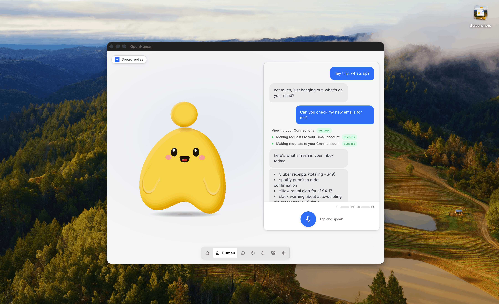

OpenHuman：把个人 AI 从临时对话，推成会记人的长期代理
这条 X 帖刷屏的关键，不是“又一个 Agent”，而是把个人 AI 拆成 本地记忆、118+ 集成、托管服务 和 TokenJuice 的组合；README 则把它收束成一台能长期跟你一起工作的桌面助手。
但它也不是完全离线的“本地一切”：README 明确写了 local + managed services, where needed，也就是本地存储与托管能力并存。看懂这个边界，才不会把它误读成纯本地私有助理。
README 里最能代表它的一张图
左边是 mascot，右边是桌面端交互示例；下方是“资料入口 + 多语言 + 版本/状态”一整套产品面。

来源：tinyhumansai/openhuman README hero 图。它比单纯的榜单 badge 更能说明产品形态：这是一个桌面优先、带记忆树与集成层的长期代理。
它的官方定义很直接
README 把它定义为 personal AI super intelligence，不是单一聊天机器人，而是一个可持续吸收你数据与行为的 agentic assistant。
- 桌面端优先
- 有 mascot，有交互面
- 默认就连着一套工具链
它在解决什么痛点
它瞄准的是 AI 的老问题：每次对话都像从零开始。OpenHuman 想把偏好、上下文、连接器数据和历史操作沉到可复用的记忆树里。
- 减少“重复讲一遍”
- 把工作区信息持续带进来
- 让助手越用越懂你
为什么这条 X 帖会火
因为它不是在卖“新模型”，而是在卖“新工作方式”：看起来像一个本地产品，实际把长期记忆、数据连接与托管能力捆在一起。
- GitHub Trending + Product Hunt 榜单加持
- README hero 图足够像成品
- 一句话定位足够强
Memory Tree + Obsidian Wiki
把连接过的数据、偏好和活动汇成层级摘要树，并同步成可读可编辑的 Markdown vault。
这不是简单记聊天记录，而是把个人知识变成可持续检索的结构。
118+ third-party integrations
Gmail、Notion、GitHub、Slack、Stripe、Calendar、Drive、Linear、Jira……一次 OAuth 后，连接器直接进工具层。
它的价值在于“agent 已经有明天的上下文”。
TokenJuice 把长输出压短
HTML 变 Markdown、长 URL 变短、工具输出去重摘要，目标是把 token 成本和延迟压下去。
对重度 agent 来说，压缩层就是成本层。
桌面端 + mascot + model routing
它不是一个纯网页壳：有桌面端、有可见 mascot、有语音与会议参与能力，还有默认的模型路由层。
这让它更像一台“个人 AI 工作站”。
原生包优先，别先走脚本
官方优先推荐 Homebrew / signed apt repo / AUR / MSI 这类原生包路径，因为它们能走系统签名链。脚本安装是备用方案，不是首选。
- macOS：Homebrew tap
- Debian/Ubuntu：signed apt repo
- Arch：AUR
- Windows：signed MSI
先把“能用”跑起来，再谈深度定制
一个关键细节：它不是“装上就彻底离线”的纯本地软件。README 说明默认体验仍会使用 OpenHuman 托管服务处理登录、模型路由、搜索代理和部分集成流程；如果要全自定义，需要自己带模型、搜索或 Composio 凭据。
边界一：并非全离线
README 明确写着 managed services where needed。也就是说，登录、模型路由、搜索代理和部分集成仍依赖托管后端。
边界二：仍处在 early beta
它已经有很完整的叙事和产品面，但 README 也直接标了 early beta，意味着功能与稳定性都还在快速迭代。
边界三：平台兼容不是零成本
官方还单独提示了 Linux / AppImage / Wayland / Arch 相关问题，说明桌面端分发与环境兼容仍需认真看安装说明。
谁最该先看它
- 重度 SaaS 用户：邮箱、文档、代码仓库、日历全都要连
- 希望 AI 记住偏好与长期上下文的人
- 愿意接受“托管 + 本地”混合架构的人
谁不要把它想太神
- 只想要最轻最简单的单轮问答
- 要求完全离线、完全自托管、零后端依赖
- 不愿意做 OAuth / 数据连接配置的人
如果要继续深挖 integrations、memory tree、token compression 与 model routing，文档站是下一步。
infocard-hardblue-style · 技术分享卡 · 来源：X 原帖 + tinyhumansai/openhuman README / Docs · 已按硬核蓝手册重排